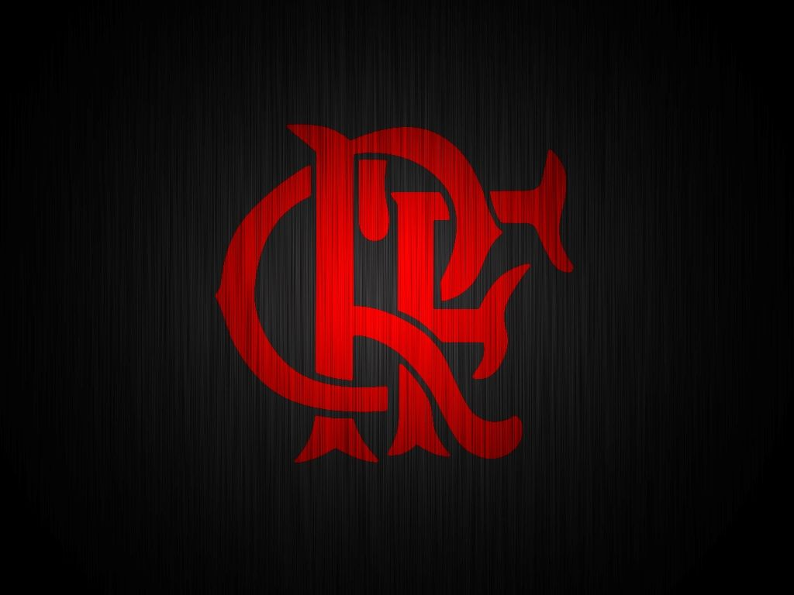
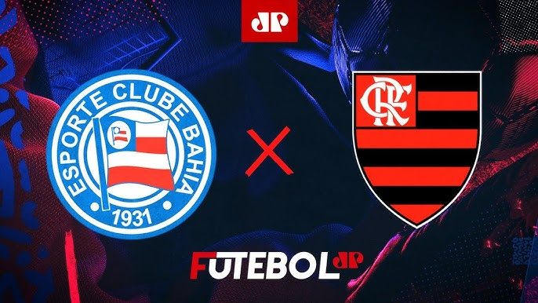

A equipe de futebol do Flamengo foi criada em decorrência de uma desavença em seu rival Fluminense, em 1911. O atleta Alberto Borgerth, que jogava futebol no Fluminense e remava no Flamengo, propôs a criação de uma seção de futebol no clube de regatas e foi assim que nasceu o Departamento de Esportes Terrestres.

O time rubro-negro Flamengo atualmente possui a quantidade de 60 títulos, que são eles:
1 Mundial Interclubes - 1981;
3 CONMEBOL Libertadores da América - 1981, 2019 e 2022;
1 Copa Mercosul - 1999;
1 Copa Ouro Sul-Americana - 1996;
1 Recopa Sul-Americana - 2020;
8 Campeonatos Brasileiros - 1980, 1982, 1983, 1987, 1992, 2009, 2019 e 2020;
4 Copas do Brasil - 1990, 2006, 2013 e 2022;
2 Supercopas do Brasil - 2020 e 2021;
37 Campeonatos Cariocas - 1914, 1915, 1920, 1921, 1925, 1927, 1939, 1942, 1943, 1944, 1953, 1954, 1955, 1963, 1965, 1972, 1974, 1978, 1979, 1979 (especial), 1981, 1986, 1991, 1996, 1999, 2000, 2001, 2004, 2007, 2008, 2009, 2011, 2014, 2017, 2019, 2020, 2021 e 2024;
2 Torneios Rio-São Paulo - 1940 e 1961.
